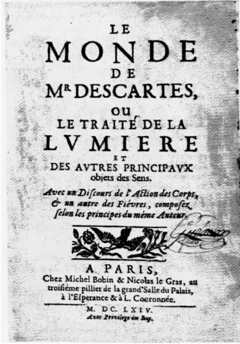

1618年，笛卡尔的精神觉醒就发生在荷兰，如今重返故地，他很可能感觉到了其他人对自己寄予的厚望。不仅是贝律尔，巴黎还有许多人也被他的才能折服了，都对他的新作翘首以盼。在巴黎的时候，笛卡尔写过一些论著，但都半途而废（参考1.135），现在他开始写一本小书，自己估计几个月就能完成。
为了避免打扰，他格外谨慎，直到1629年9月才在荷兰最北面靠近弗拉讷克的地方选定了住所。他在1630年11月写给梅森的一封信（1.177）中说，自己已动笔写“关于形而上学的一本小书……我的主要目标是证明上帝的存在，证明灵魂能独立于身体而存在，然后自然就能推出灵魂不朽的结论”。和以前的许多作品一样，这本形而上学的小书也半途而废。1630年5月，笛卡尔似乎动了另一个念头，因为梅森曾在信中提到一本“邪恶之书”，很可能是偏向无神论的，笛卡尔想把自己回应的文字整理成书，但这个计划也放弃了。
到达荷兰之后不久，他还有过另一个设想，若能成功，他就不必出版什么书了，但这个计划需要一位巴黎的镜匠让·费里耶的合作。笛卡尔极力引诱费里耶来荷兰，告诉他自己设计出了一种切割望远镜镜片的神奇机器，并把数据明细都寄给了他。倘若这种机器和这种镜片制造成功，笛卡尔的名声很可能早就确立了。然而，费里耶不为所动，制造机器的计划只能搁浅。
笛卡尔启动的第三个项目更雄心勃勃。他的后半生几乎都在以不同形式实施这个计划。1629年，他开始写一部巨著，希望勾勒出一种能解释所有自然现象的统一学说。这部作品直到他死后才出版，第一部分名为《世界/论光》，第二部分名为《论人》。在他生前，《世界/论光》中阐述的那种物理学理论是教会所禁止的。由于他决定暂不发表这一部分，《论人》也同样被搁置起来。但他从未放弃这个计划。虽然他的活跃阶段并未全部用于这部巨著的写作，但另外的这些时间，他也在为推出书中物理学部分的删节版创造适宜的条件。
1630年着手写《世界》的时候，笛卡尔觉得自己的自然理论纲要很快就能完成。他原计划在1633年初把定稿寄给梅森，结果未能如愿，直到1633年7月他还在进行修改。更糟糕的是，当书终于准备付印时，笛卡尔却听到伽利略因为宣扬地动说（在《关于托勒密和哥白尼两大世界体系的对话》中）而被宗教裁判所判刑的消息 [36] 。《世界》也包含了地球运动的假设，而且在不破坏全书体系的情况下很难删除。由于害怕遭受和伽利略一样的命运，笛卡尔于1634年写信给梅森说，他放弃出版了。
但《世界》似乎借尸还魂了。《方法谈》第五部分其实都是在介绍这部著作和它的姊妹篇《论人》。后来，笛卡尔还会在他的《哲学原理》中嵌入更多《世界》里的内容。
从保存下来并在他身后出版的原稿看，笛卡尔在《世界》里几乎等于是在断言 地动说。这部著作的文学外壳帮了他的忙。正如在《世界》取消出版三年后问世的《方法谈》里所做的，笛卡尔在此书中也声称他只是在讲一则寓言，一个关于某个想象的宇宙如何运行的故事——虽然这个宇宙看起来与实际的物理世界没有任何差别。
《世界》的第六章和第七章描绘了这个想象的宇宙以及统治它的定律。笛卡尔先是邀请读者设想从一个向各方无限延伸的想象空间中的某点来审视这个宇宙，就像在一个远离陆地的大洋中的某点观看这个大洋。然后，读者需要想象上帝创造了某种无以名状的物质，填满了空间的每个角落。在笛卡尔的物理学中，一个完全被物质充满的宇宙是最具特色的想法。笛卡尔知道，它对传统的教条和读者的常识都是一种挑衅。比如，这种观念让他假设在空间的任何部分都存在着一种不可感知的精微物质，因而在这个空间里，感官不能见到或触到任何东西。但是笛卡尔相信，假设这样一种不可感知的物质形式比坚持“自然厌恶真空”的传统原则更能自圆其说，如果放弃宇宙被完全充满的想法，后者就得被援引来解释某些现象。笛卡尔假定，物质占满了所有空间，它的各部分都处于持续的运动中。宇宙任何部分的运动都意味着该部分的物质包正在即时交换位置。他认为，在这种即时交换中，物质会以圆形的轨迹运动，理由在于一个移动的物体不会排开所有的物质，其排开的物质刚好能填满它腾出的空间，从而形成一个圆形的路径，起点就是最初移动的物体所在的位置。在《世界》中，这种圆周运动被比做池子深处的一条鱼的运动：鱼鳍划动会排开周围部分的水，而不是整个池子里的水，排开的水又会把鱼不断腾出的空间填满。
笛卡尔规定，这个想象宇宙中的这种物质的本性必须能被完全理解，它的所有属性和所有形式在人的智力看来不能有任何模糊之处。根据这一规定，他认为自己所想象的宇宙是这样的：
（11.33）
在排除所有这些因素时，他依靠的是在《世界》开篇引入的论证。这些论证是为了表明，在形体和属性的问题上，无论是常识的观念还是经院的理论都有许多含混晦暗之处。
说明了想象的宇宙中物质不应具备的一切特性后，笛卡尔列举了这种物质可以拥有的形体。它“可以划分为尽可能多的部分，这些部分可以具备尽可能多的形状，而且……我们能想象出多少种运动形式，它的每一部分就可以拥有多少种”（11.34）。笛卡尔要求读者和他一起设想，他描述的这种物质不仅可以分割和区分，而且上帝事实上也分割了它，他所创造的任何差异都包含了“他赋予各部分的运动的多样性”，也即各部分在运动的速度和方向上的多样性。
笛卡尔接下来描述了他的“自然定律”，即在拥有长、宽、高以及具备特定形状、以不同速度运动的各部分的前提下，物质的行为必须遵循的三条法则。第一条定律称，除非与另一部分相撞，每一部分物质将保持其最初的形状、大小以及运动或静止的状态（11.38）。第二条定律称，任一部分物质通过碰撞所获得的动能 [37] 与碰撞的另一方所失去的动能相等（11.41）。第三条定律称，任何运动物体都倾向于保持直线运动，尽管它们实际上做的是圆周或曲线（发生碰撞的情况下）运动（11.43）。《世界》宣称，解释在无生命世界所观察到的任何现象时，无须赋予物质除广延和运动之外的任何属性，也无须在这三条基本定律之外添加任何定律来描绘自然界最普遍的现象：诸如物质因碰撞而产生的分裂、变形和积聚，以及动能的增加或减少（参见11.47）。

图3 笛卡尔《世界》的标题页（该书写于1629-1633年，直到1664年才出版）
虽然笛卡尔同时把广延和运动的属性赋予了物质，其实只有广延（三维的空间布局）才是其本质属性。他从未说过物质必须拥有运动的部分，他只是认为，如果物质拥有可以通过运动来区分的部分，我们在现实中观察到的自然现象就是理所应当的。他特别提出，如果在一个不存在真空的世界里，物质的各个部分可以通过不同的圆周运动加以区分（参考11.19），那么其现象将和我们所观察到的完全一致。笛卡尔把行星的轨道与速度等天文现象归于一种圆周运动，这种运动与一个旋涡在宇宙物质中的作用相似。这样，行星就是被一个以太阳为中心的旋涡裹挟着运动。地球自身的旋涡运动解释了为什么虽然地球在自转，其表面的物体却不会从切线方向被抛出去：旋涡作用会让其表面的所有物体有坠向旋涡中心（地心）的趋势。与此相似，行星也不会被环绕太阳的运动扔向空间，而会受到它们的旋涡中心的吸引。
笛卡尔担心触怒罗马宗教裁判所的正是这些关于行星运动的论纲。当时教会唯一允许讲授的是经院哲学从亚里士多德那里继承的理论，该教义认为地球是天穹不动的中心。《世界》中还有其他一些无疑会令罗马天主教廷不悦的观点。例如，书中规定，一旦上帝将最初的运动赋予物质，他就不再进一步干预自然界的进程，只按照这三条自然定律维持其运行。换言之，不会有神迹来打断自然的进程（11.48）。这类主张足以让反对者告他不虔敬。
要使教会容忍他的物理学，他或者需要按照教会的意愿作出修改，或者掩饰其危险的后果，或者将整套理论建筑于某种教会中最顽固的反对者都无法反对的原则之上。最终，在《沉思集》和《哲学原理》中，笛卡尔选择了第三条道路。他竭力证明，物质世界的科学知识仰赖于一种与身体截然区分的心智或灵魂，而心智或灵魂若要掌握合理物理学的原则，必须先认识上帝。但在短时间内，他决定有选择地描述《世界》中的内容，只是粗略地勾勒自己的科学方法，而不详加阐释。